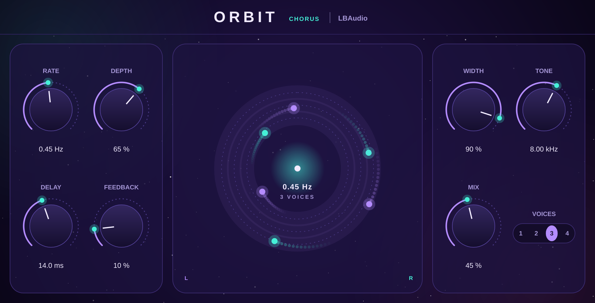

Chorus plugin · VST3 & AU
Orbitby LBAudio
From a gentle shimmer to a jet-plane flange: up to four voices circling your sound, spread wide across the stereo field.
Instant download. Any local VAT is worked out at checkout. Or get the FX 5 in one bundle.
- VST3
- AU
- Windows
- macOS
- Linux
- Up to 4 voices

Hear it on a real track
Part of the LBAudio track from the Orbit video, run through Orbit at three settings. Each version is matched to the original's loudness. Best on headphones, so you hear the voices move across the stereo field.
Two slow voices blended low: a little movement and width without obvious wobble.
Watch it work
The real plugin on screen, on one of our tracks. Every before-and-after is matched in loudness, so you hear what Orbit does, not a change in volume.
Voices in orbit
The display shows each voice circling at the rate you set, so you can see how many there are, how far they move and how wide they spread.
One to four voices
One voice for a classic chorus or flanger, up to four for a thick, shimmering ensemble.
Wide from mono
Each voice moves differently on the left and right, so even a mono synth or guitar comes out wide.
Feedback for flanging
Turn up Feedback with a short Delay for metallic, jet-plane flanger sweeps.
The controls
Eight controls. Double-click any knob to reset it, or click a value and type one in.
| Control | Range | What it does |
|---|---|---|
| Rate | 0.05 to 5 Hz | How fast the voices move. |
| Depth | 0 to 100 % | How far each voice's delay sweeps. |
| Voices | 1 to 4 | How many voices there are. More voices, thicker sound. |
| Delay | 5 to 26 ms | The voices' base delay: short for flanging, longer for chorus and doubling. |
| Width | 0 to 100 % | How differently the left and right sides move, from mono to fully wide. |
| Feedback | 0 to 70 % | Feeds the voices back into themselves for a sharper, flanger-like sound. |
| Tone | 2 to 20 kHz | Darkens the voices so the chorus stays smooth. |
| Mix | 0 to 100 % | The balance of dry signal and voices. |
Where to start
Four starting points. Set these, then adjust by ear.
-
Wide synth pad
Rate 0.4–0.6 Hz · 4 voices · width 100 % · mix 40 %
The classic lush chorus: thick, wide and slowly shimmering.
-
Clean guitar shimmer
Rate 0.8 Hz · depth 40 % · 2 voices · mix 35 %
A bright, gentle movement for clean guitars and electric pianos.
-
Jet flange
Rate 0.1–0.2 Hz · 1 voice · delay 5 ms · feedback 55–65 %
A slow, metallic sweep for drum buses, risers and transitions.
-
Subtle vocal width
Rate 0.3 Hz · depth 25 % · 2 voices · mix 15–20 %
Widens backing vocals without any obvious wobble.
Specs
One download for each system. No iLok, no account and no activation.
- Formats
- VST3 on Windows, macOS and Linux. Audio Unit (AU) on macOS.
- Windows
- Windows 10 or later, 64-bit.
- macOS
- macOS 10.13 or later. Runs natively on Apple Silicon and Intel.
- Linux
- 64-bit x86 (x86-64).
- Hosts
- Any DAW that loads VST3 or AU plugins, such as Ableton Live, FL Studio, Cubase, Reaper, Studio One, Bitwig and Logic Pro. Not available for Pro Tools (AAX).
- Latency
- None: zero samples.
- Voices
- 1 to 4, with a 5 to 26 ms base delay.
- Channels
- Mono or stereo in, stereo out.
Questions
Anything else? Email support@lbaudio.co.uk.
How do I install it?
Unzip the download and copy Orbit.vst3 into your VST3 folder: C:\Program Files\Common Files\VST3 on Windows or ~/Library/Audio/Plug-Ins/VST3 on a Mac. Logic users also copy Orbit.component into ~/Library/Audio/Plug-Ins/Components. Then rescan plugins in your DAW. The zip includes these steps in INSTALL.txt.
How many computers can I use it on?
All the computers you personally own or use. See the licence agreement for the details.
Can I use it on commercial releases?
Yes. The music you make with Orbit is entirely yours, with no royalties or credits owed.
Do updates cost anything?
No. Updates to Orbit version 1 are free for everyone who bought it.
What if it doesn't work on my system?
Get in touch within 14 days of buying. If we can't get it working, you get a full refund. See the refund policy.
Does it work in Pro Tools?
Not yet. Pro Tools only loads AAX plugins, and Orbit is VST3 and AU.
Can I use it on a mono track?
Yes. Orbit takes a mono input and plays it back in stereo, so a mono synth or guitar comes out wide.
Orbit
VST3 & AU for Windows, macOS and Linux. Instant download. Or get the FX 5 in one bundle.